1. Understanding YOUR business needs
1.1 Our project
1.1.1 Our vision 🔮
- Show everyone that amazon is not the best
- We want to support local shops
- Everyone should be able to use Betterzon
1.1.2 Use cases (incl. scopes)

1.1.3 SRS
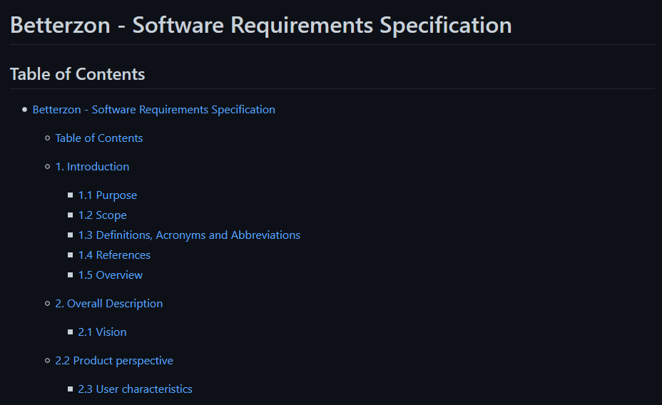1.1.4 non-functional
- Easy to access
- Easy to scale
- Easy and cheap to maintain
- Low response time
- Focus on privacy
1.2. Project methodology
Scrum
We decided to use the agile development approach scrum.

1.3 Project management
1.3.1 RUP Flow Chart
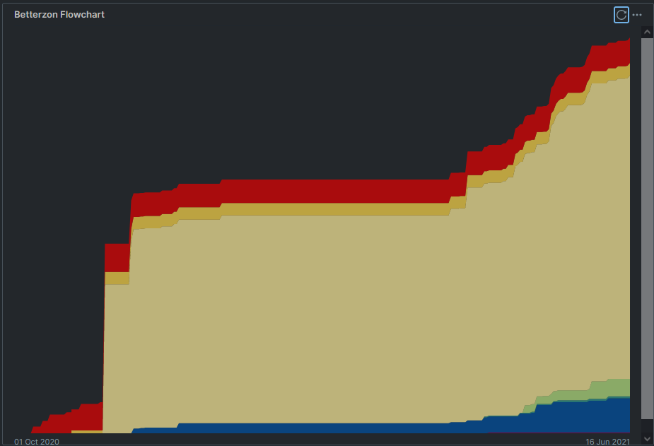1.3.2 Scrumming
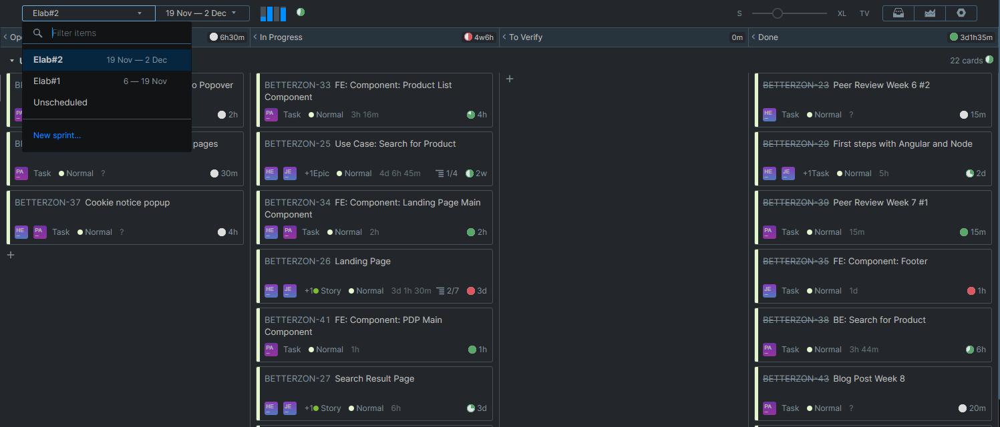1.3.2 Scrumming
First sprint 30.04.2021 - 07.05.2021
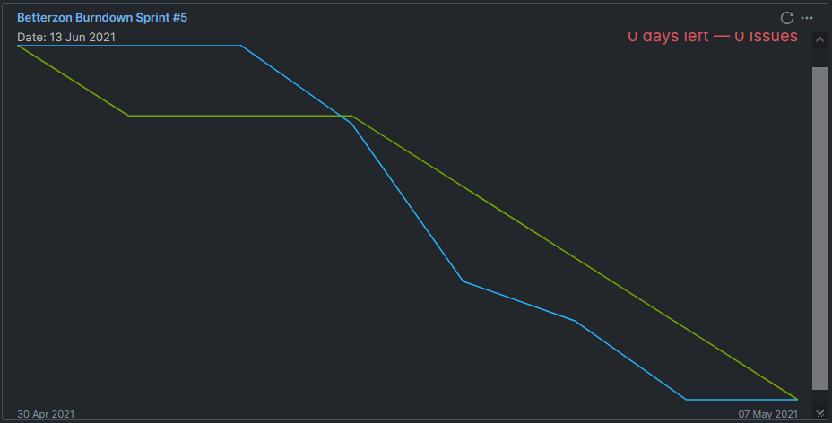1.3.2 Scrumming
Second sprint 14.05.2021 - 21.05.2021
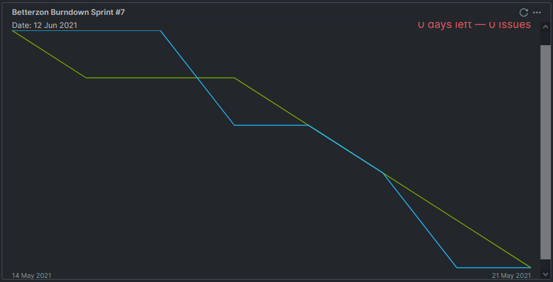1.3.2 Scrumming
Third sprint 28.05.2021 - 04.06.2021
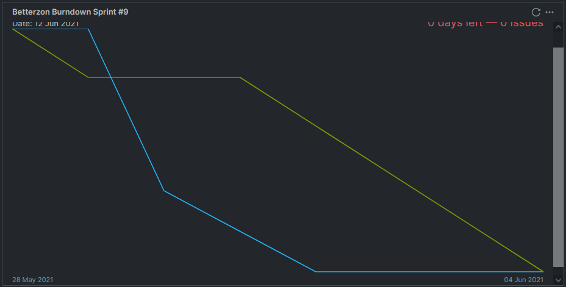1.4 Iterative process
With scrum we are following an iterative process, improving our code and ourselves one week at a time.

1.4.1 Why we chose an iterative process
- Deployment after every sprint
- Easy adjustment without big replanning
1.5 Cost estimation
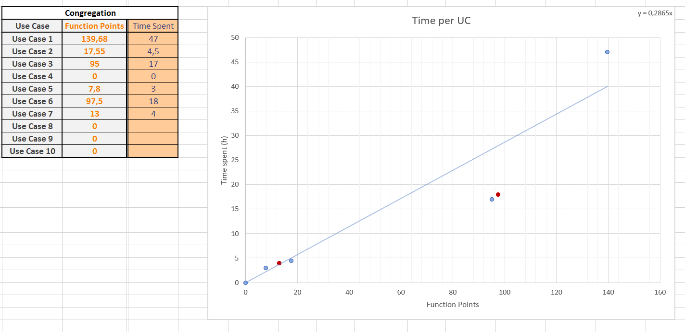- Use Case 1 is over the estimation
2. Technical ability
2.1 Live-demo
2.1.1 Tools we used
- Git -

- IntelliJ -

- YouTrack -

- Postman -

2.1.2 Live-demo with Manfred

⬆️this is Manfred
2.2 Extension of the functionality
2.2.1 Extension of the functionality
- We use a modular backend
- Every table corresponds with a model and api endpoint
- ➾ makes it easy to extend and adjust
- We use the beatufilsoup library to extract the information from our partners
- ➾ Easy to understand and extend
- We use angular for the frontend
- ➾ Easy to add more components
2.3 Visualisation of our code
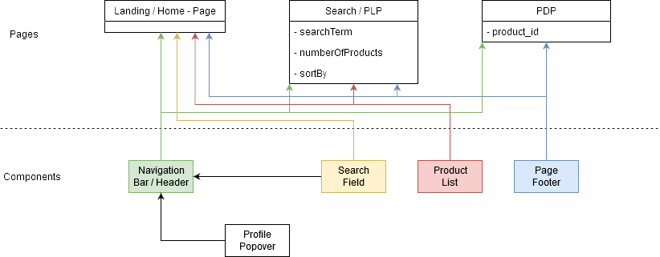 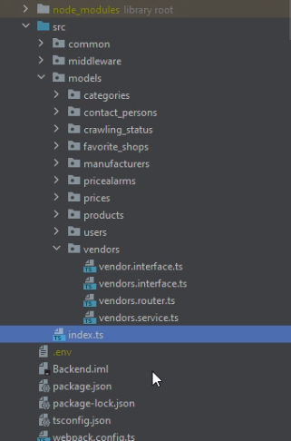3. Quality
3.1 Architecture
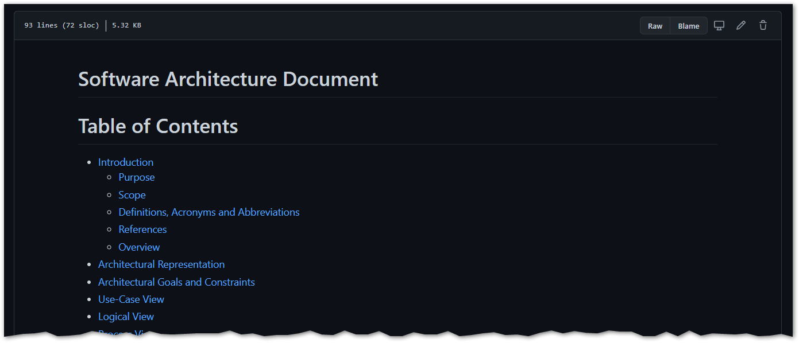3.2 Configuration
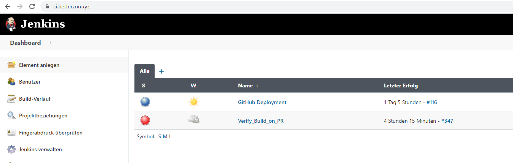3.2.1 Continuous integration
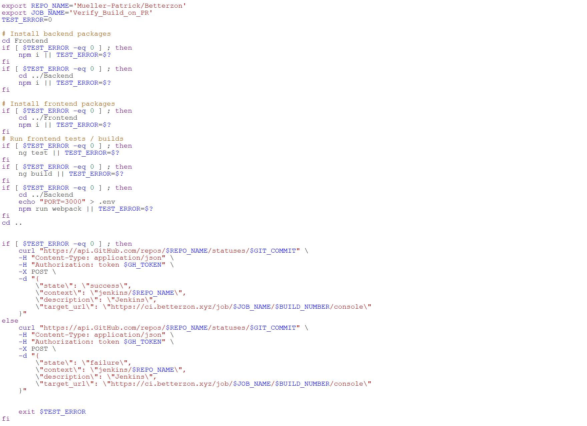3.2.2 Continuous delivery
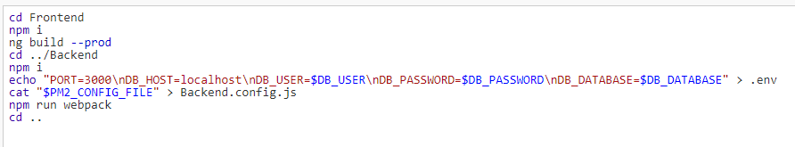3.3 Risk management
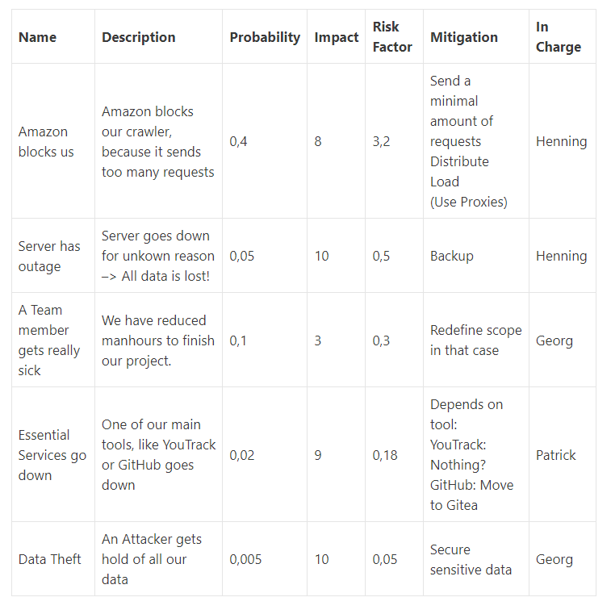3.4 Testing

3.5 Patterns
3.6 Metrics
🔍 Out of Scope
📝 Handout
Time Overview
| First Name | Second Name | Project(hours) | |
|---|---|---|---|
| Kristin | Agne | agne.kristin@student.dhbw-karlsruhe.de | ~ 45 |
| Blog, Github Administration, Peer Review, Organisation | |||
| Danny | Kroll | kroll.danny@student.dhbw-karlsruhe.de | ~ 50 |
| Angular Frontend, YouTrack, Project Management, Midterm Presentation | |||
| Nico | Holzhäuser | holzhaeuser.nico@student.dhbw-karlsruhe.de | ~ 60 |
| Infrastructure, Backend, Docker, Database | |||
Use case diagram

Print your own handout
Look at the printing terms on top right ↗